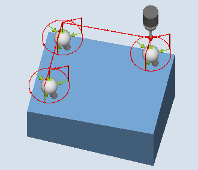

Function
This measuring method can be used to measure three spheres of equal size, fixed to a common base (workpiece).
Measuring individual spheres is realized the same as when measuring one sphere, see 3D sphere (CYCLE997).
After measuring the 3rd sphere, for a correction in a work offset (WO), the position of the workpiece on which the spheres are mounted, is corrected as a rotation in the WO.
Measuring principle
The position of the center points of the three spheres should be entered as a setpoint in parameters XM1 to ZM3 in the active workpiece coordinate system. The measurement begins with the 1st sphere and ends with the 3rd sphere.
Positioning between the spheres is realized along a straight line at the height of the starting position of the 1st sphere. The parameter settings – such as the number of measuring points, determining the diameter, diameter – apply to all three spheres.
 Measure: 3 spheres (CYCLE997), |  Measure: 3 spheres (CYCLE997), |
Correction of the work offset (WO)
After the measurement of the 3rd sphere, a work offset is calculated from the measured center points of the balls. This consists of translatory components (offset) and rotary components (rotation), and describes the position of the workpiece on which the spheres are mounted.
During the correction, the triangle of the determined sphere center points includes the specified center point setpoint position (workpiece coordinates). The sum of the deviations of the spheres to each other must be within the value of parameter TVL. Otherwise no correction is performed and an alarm is output.
Requirements
The probe must be called as a tool with tool length compensation and be active.
Tool type of the probe:
3D multi probe (type 710)
Mono probe (type 712)
In the active WO, the approximate values for the position of the spheres regarding offset and rotation are entered and activated. The value in the offset of the WO refers to the 1st sphere.
Only minor deviations from the actual position of workpiece from the cycle can be expected.
The sphere diameter which is to be measured must be much greater than the probe sphere diameter (approx. 10:1).
| Note |
A SPOS-capable spindle is needed for the function "Align 3D probe", or for probe type 712. |
Starting position before the measurement
The probe must be positioned above the set sphere center point of the 1st sphere at a safe height.
| Note |
The measuring points must be selected so that there is no danger of a collision with a sphere fixture or another obstacle during measuring or intermediate positioning. The measurement path in parameter DFA should be selected so large that all measuring points can be reached within total measurement path 2 x DFA. Otherwise no measurement can be performed or the measurements are incomplete. |
Position after the end of the measuring cycle
The probe is above the determined sphere center point of the 3rd sphere at a safe height (height at the starting position).